Cartoon+Texture Variational Image Decomposition
This numerical tour explores the use of variational energies to decompose an image into a cartoon and a texture layer.
Contents
Installing toolboxes and setting up the path.
You need to download the following files: signal toolbox and general toolbox.
You need to unzip these toolboxes in your working directory, so that you have toolbox_signal and toolbox_general in your directory.
For Scilab user: you must replace the Matlab comment '%' by its Scilab counterpart '//'.
Recommandation: You should create a text file named for instance numericaltour.sce (in Scilab) or numericaltour.m (in Matlab) to write all the Scilab/Matlab command you want to execute. Then, simply run exec('numericaltour.sce'); (in Scilab) or numericaltour; (in Matlab) to run the commands.
Execute this line only if you are using Matlab.
getd = @(p)path(p,path); % scilab users must *not* execute this
Then you can add the toolboxes to the path.
getd('toolbox_signal/'); getd('toolbox_general/');
A variational image separation finds a decomposition \(f = u^\star + v^\star + w^\star\) where \(u^\star\) and \(v^\star\) are solutions of an optimization problem of the form \[ \min_{u,v} \: \frac{1}{2}\|f-u-v\|^2 + \lambda J(u) + \mu T(v), \]
where \(J(u)\) is a cartoon image prior (that favors edges) and \(T(v)\) is a texture image prior (that favors oscillations). The parameters \(\lambda,\mu\) should be adapted to the noise level and the amount of edge/textures.
When no noise is present in \(f\), so that \(w^\star=0\), on minimizes \[ \min_{u} \: T(f-u) + \lambda J(u). \]
In this tour, we define \(J\) as the total variation prior. For \(T\), we use the Hilbert norm framework introduced in:
Constrained and SNR-based Solutions for TV-Hilbert Space Image Denoising, Jean-François Aujol and Guy Gilboa, Journal of Mathematical Imaging and Vision, volume 26, numbers 1-2, pages 217-237, November 2006.
Total Variation Cartoon Prior
The total variation is a Banach norm. On the contrary to the Sobolev norm, it is able to take into account step edges.
First we load a textured image.
n = 256;
name = 'boat';
f = rescale( crop(load_image(name),n) );
Display it.
clf; imageplot(f);

The total variation of a smooth image \(f\) is defined as \[J(f)=\int \|\nabla f(x)\| d x\]
It is extended to non-smooth images having step discontinuities.
The total variation of an image is also equal to the total length of its level sets. \[J(f)=\int_{-\infty}^{+\infty} L( S_t(f) ) dt\]
Where \(S_t(f)\) is the level set at \(t\) of the image \(f\) \[S_t(f)=\{ x \backslash f(x)=t \}\]
The Gradient of the TV norm is \[ \text{Grad}J(f) = \text{div}\left( \frac{\nabla f}{\|\nabla f\|} \right) . \]
The gradient of the TV norm is not defined if at a pixel \(x\) one has \(\nabla f(x)=0\). This means that the TV norm is difficult to minimize, and its gradient flow is not well defined.
To define a gradient flow, we consider instead a smooth TV norm \[J_\epsilon(f) = \int \sqrt{ \varepsilon^2 + \| \nabla f(x) \|^2 } d x\]
This corresponds to replacing \(\|u\|\) by \( \sqrt{\varepsilon^2 + \|u\|^2} \) which is a smooth function.
We display (in 1D) the smoothing of the absolute value.
u = linspace(-5,5)'; clf; subplot(2,1,1); hold('on'); plot(u, abs(u), 'b'); plot(u, sqrt(.5^2+u.^2), 'r'); title('\epsilon=1/2'); axis('square'); subplot(2,1,2); hold('on'); plot(u, abs(u), 'b'); plot(u, sqrt(1^2+u.^2), 'r'); title('\epsilon=1'); axis('square');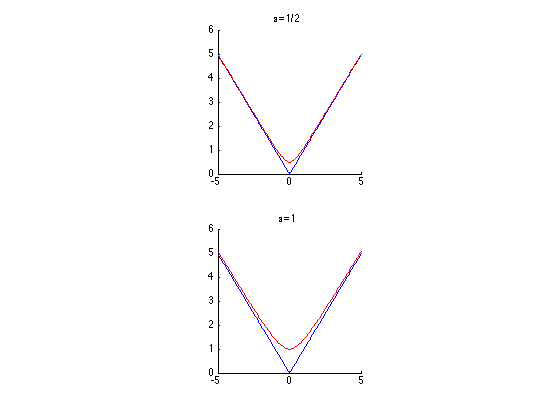
In the following we set a small enough regularization parameter \(\varepsilon\).
epsilon = 1e-2;
Compute the (smoothed) total variation of \(f\).
J = @(u)sum(sum( sqrt( epsilon^2 + sum3(grad(u).^2,3) ) ));
disp(['J(f) = ' num2str(J(f),3)]);
J(f) = 4.37e+03
TV-\(L^2\) Model
The simplest decomposition method performs a total variation denoising: \[\min_u \frac{1}{2}\|f-u\|^2 + \lambda J(u).\]
It corresponds to the TV-\(L^2\) model of Rudin-Osher-Fatermi, because the texture prior is the \(L^2\) norm: \[ T(v) = \frac{1}{2} \|v\|^2. \]
This a poor texture prior because it just assumes the texture has a small overall energy, and does not care about the oscillations.
Define the regularization parameter \(\lambda\).
lambda = .2;
The step size for diffusion should satisfy: \[ \tau < \frac{2}{1 + \lambda 8 / \varepsilon} . \]
tau = 1.9 / ( 1 + lambda * 8 / epsilon);
Initialization of the minimization.
u = f;
The Gradient of the smoothed TV norm is \[ \text{Grad}J(f) = \text{div}\left( \frac{\nabla f}{\sqrt{\varepsilon^2 + \|\nabla f\|^2}} \right) . \]
Shortcut for the gradient of the smoothed TV norm.
GradJ0 = @(Gr)-div( Gr ./ repmat( sqrt( epsilon^2 + sum3(Gr.^2,3) ) , [1 1 2]) ); GradJ = @(u)GradJ0(grad(u));
One step of descent.
u = u - tau*( u - f + lambda* GradJ(u) );
Exercice 1: (check the solution) Compute the gradient descent and monitor the minimized energy.
exo1;

Display the cartoon layer.
clf; imageplot(u);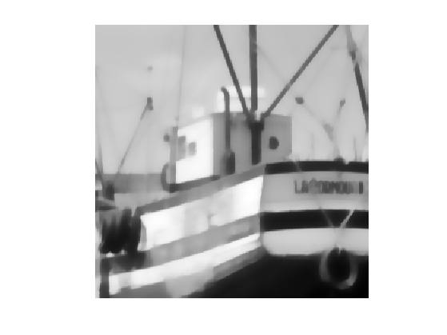
Shortcut to increase the contrast of the textured layer for better display.
rho = .8; % constrast factor eta = .2; % saturation limit displaytexture0 = @(x)sign(x).*abs(x).^rho; displaytexture = @(v)displaytexture0( clamp(v,-eta,eta)/eta );
Display the textured layer.
clf; imageplot( displaytexture(f-u) );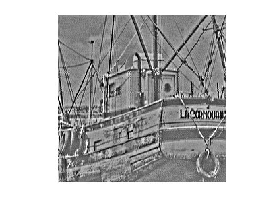
Gabor Hilbert Energy
To model the texture, one should use a prior \(T(v)\) that favors oscillations. We thus use a weighted \(L^2\) norms computed over the Fourier domain: \[ T(v) = \frac{1}{2} \sum_{\omega} \|W_{\omega} \hat f(\omega) \|^2 \] where \(W_\omega\) is the weight associated to the frequency \(\omega\).
This texture norm can be rewritten using the Fourier transform \(F\) as \[ T(v) = \frac{1}{2} \|\text{diag}(W)F u\|^2 \quad\text{where}\quad (Fu)_\omega = \hat u(\omega).\]
To favor oscillation, we use a weight that is large for low frequency and small for large frequency. A simple Hilbert norm is a inverse Sobolev space \(H^{-1}\).
It was first introduced in:
S.J. Osher, A. Sole, and L.A. Vese, Image decomposition and restoration using total variation minimization and the \(H^{-1}\) norm, SIAM Multiscale Modeling and Simulation, 1(3):349-370, 2003.
This Hilbert norm is defined using \[ W_\omega = \frac{1}{ \| \omega \| + \eta } \] where \(\eta>0\) is a small constant that prevents explosion at low frequencies.
eta = .05; x = [0:n/2-1, -n/2:-1]/n; [Y,X] = meshgrid(x,x); W = 1 ./ (eta + sqrt(X.^2 + Y.^2));
Display the inverse weight, with 0 frequency in the middle.
imageplot(fftshift(1./W));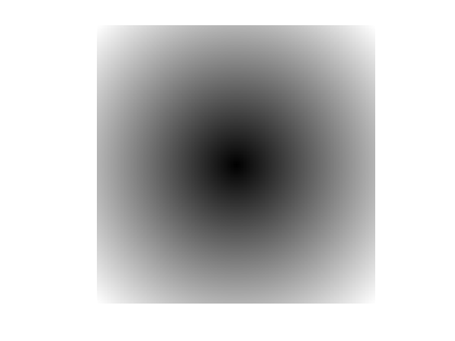
Compute the texture norm. The \(1/n\) normalization is intended to make the Fourier transform orthogonal.
T = @(v)1/2*norm( W.*fft2(v)/n, 'fro' ).^2; disp(['T(f) = ' num2str(T(f), 3) ] );
T(f) = 4.81e+06
The gradient of the texture norm is \[\text{Grad}T(v) = H v \quad\text{where}\quad H = F^* \text{diag}(W^2) F, \] where \(F^*\) is the inverse Fourier transform. Note that if \(\eta=1\), this gradient is the inverse Laplacian \[ \text{Grad}T(v) = \Delta^{-1} v. \]
Define the filtering operator \( \text{Grad}T \).
GradT = @(f)real(ifft2(W.^2.*fft2(f)));
This is a low pass filter.
imageplot(GradT(f));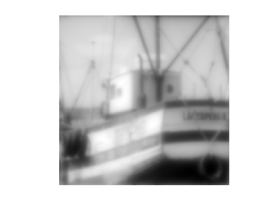
Define its inverse \( (\text{Grad}T)^{-1} \).
GradTInv = @(f)real(ifft2(fft2(f)./W.^2));
It is a high pass filter.
imageplot(GradTInv(f));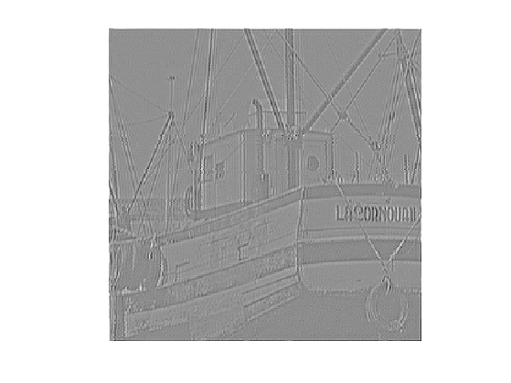
TV-\(H^{-1}\) Image Decomposition
The TV-Hilbert decomposition solves \[ \min_u \mathcal{E}(u) = \frac{1}{2} \| W F(f-u) \|^2 + \lambda J(u). \]
The mapping \(u \mapsto \mathcal{E}(u) \) is a smooth functional, it can thus be minimized using a gradient descent: \[ f^{(\ell+1)} = f^{(\ell)} - \tau \left( H(u-f) + \lambda \text{Grad}J(u) \right). \]
The parameter \(\lambda\) for the texture/cartoon tradeoff.
lambda = 5;
The gradient descent step size should satisfy: \[ \tau < \frac{2}{ \max_{\omega} W_\omega^2 + \lambda \epsilon /8 } \]
tau = 1.9 /( max(W(:))^2 + 8*lambda/epsilon );
Initial cartoon layer.
u = f;
Gradient descent step.
u = u - tau * ( GradT(u-f) + lambda*GradJ(u) );
Exercice 2: (check the solution) Perform the gradient descent, monitor the decay of the energy.
exo2;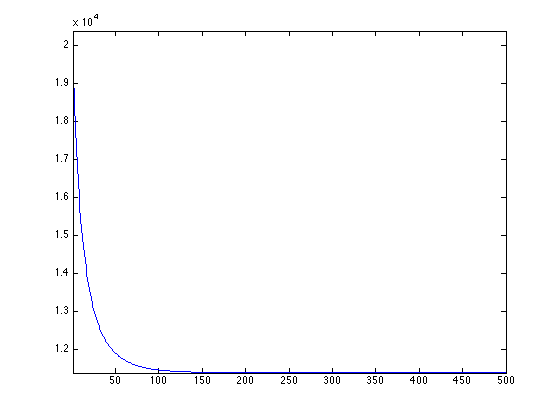
Display the cartoon layer.
clf; imageplot(u);
Display the textured layer.
clf; imageplot( displaytexture(f-u) );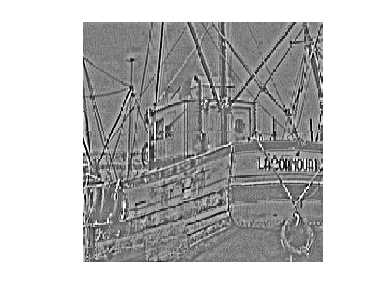
TV-Gabor Image Decomposition
The \(H^{-1}\) texture model is intended to capture very high frequency, and thus performs poorly for medium frequency textures.
To capture these patterns, we follow:
Structure-Texture Image Decomposition - Modeling, Algorithms, and Parameter Selection, Jean-Francois Aujol, Guy Gilboa, Tony Chan, and Stanley Osher, International Journal of Computer Vision, volume 67, number 1, pages 111-136, April 2006
and we use a radial weight profile centered around a frequency \(r\).
To determine the target frequency \(r\), we analyse a sub-window around a point \(p\) of the image containing approximately a single frequency.
Location \(p\) of the sub-window.
p = [125 200];
Size \(\mu\), in pixels, of the sub-window.
mu = 10;
Compute a Gaussian mask.
[Y,X] = meshgrid( 1:n, 1:n ); U = exp( ( -(X-p(1)).^2 - (Y-p(2)).^2 )/(2*mu^2) );
Display the masked image.
clf; imageplot(U.*f);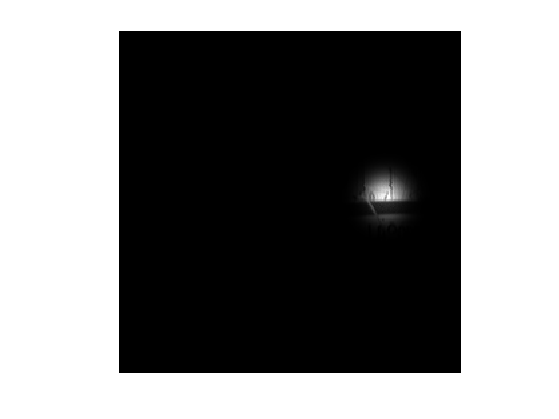
Remove the low frequencies from the Fourier transform, after centering.
F = fft2(U.*f); F = fftshift(F); F(end/2-20:end/2+20,end/2-20:end/2+20) = 0;
Compute the location \(x_m,y_m\) of the pick of the spectrum.
[tmp,i] = max(abs(F(:))); [xm,ym] = ind2sub([n n], i);
Display.
clf; hold on; imageplot(abs(F)); h = plot( [ym n-ym], [xm n-xm], 'r.' ); set(h, 'MarkerSize', 20);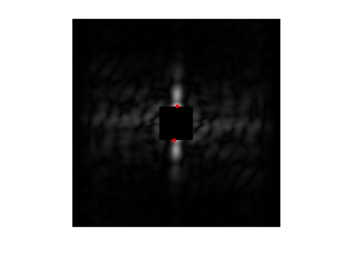
Target frequency is the distance between \( (x_m,y_m) \) and the center frequency.
r = sqrt( (xm-n/2)^2 + (ym-n/2)^2 );
We use the following weights: \[ W_\omega = 1 - e^{ -\frac{(\|\omega\|-r)^2}{ 2 \sigma^2 } } \] where \( \sigma>0 \) controls the precision one expect about the frequency location.
Radial weight profile.
sigma = 10; x = [0:n/2-1, -n/2:-1]; [Y,X] = meshgrid(x,x); R = sqrt(X.^2+Y.^2); W = 1 - exp( -(r-R).^2 / (2*sigma^2) );
Display the weight.
imageplot(fftshift(W));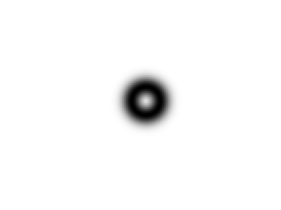
Exercice 3: (check the solution) Define the operators \(\text{Grad} T\) and apply it to an images.
exo3;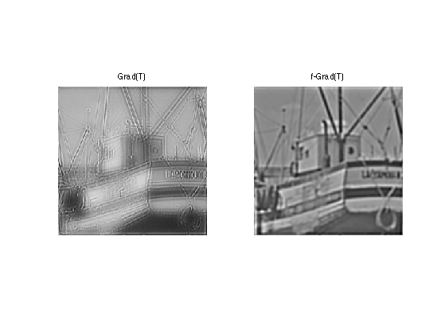
Exercice 4: (check the solution) For a well chosen value of \(\lambda\), perform the TV-Hilbert decomposition with this texture kernel.
exo4;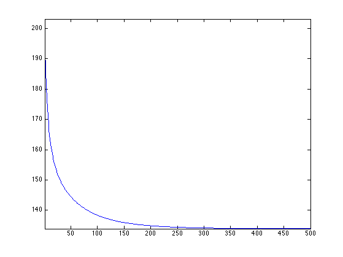
Display the cartoon layer.
clf; imageplot(u);
Display the textured layer.
clf; imageplot( displaytexture(f-u) );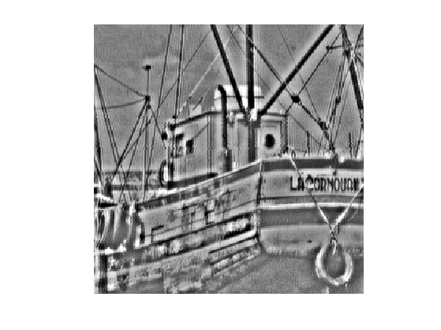